CORPÓREA
Corpórea surge de esa necesidad de apropiarse de une misme, necesidad de habitar los cuerpos como propios, de construirse y deconstruirse tantas veces como haga falta.
Corpórea pretende ser una serie en desarrollo constante , experimentando nuevas técnicas, nuevos materiales, nuevas formas de entender los cuerpos.
Piezas realizadas en Telar Magic Dobby Louët 24 lizos, compuestas en su totalidad de algodón y lana.

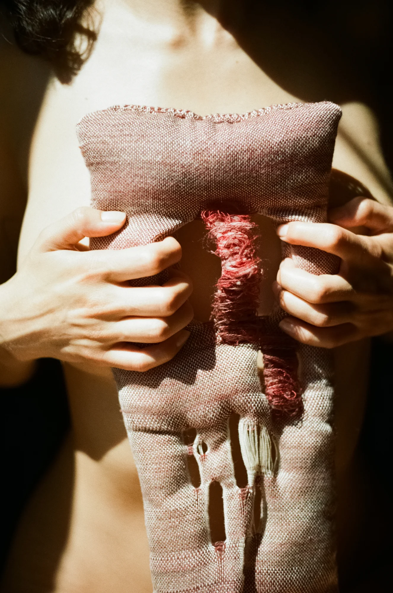
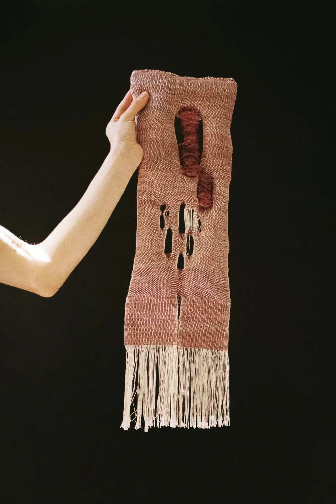

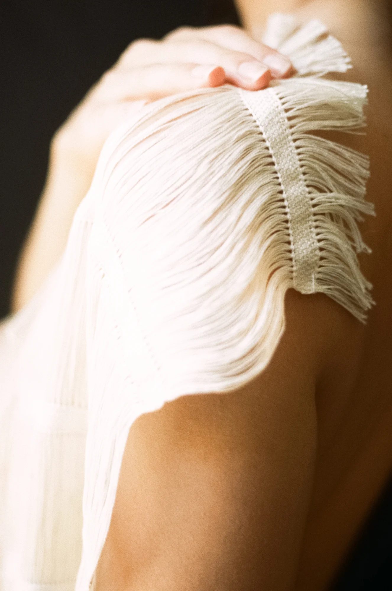
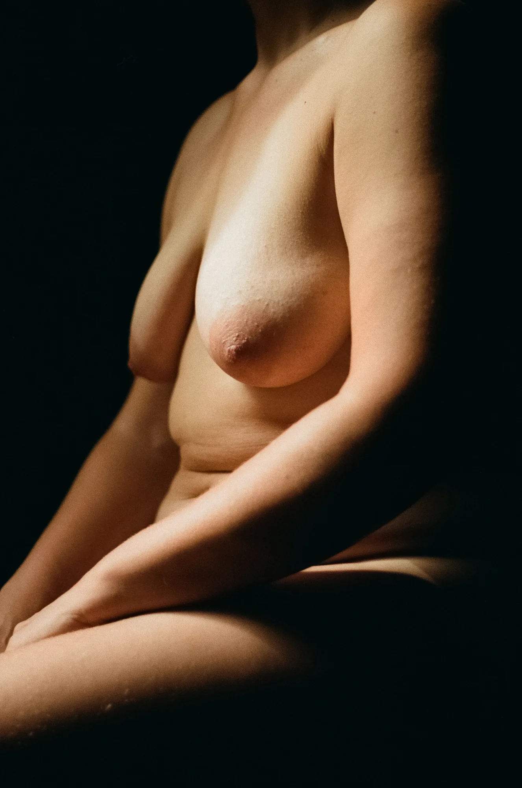
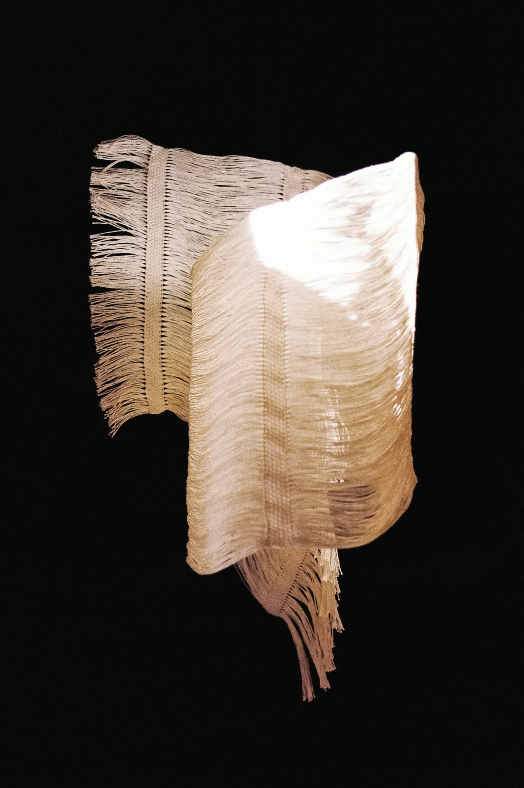
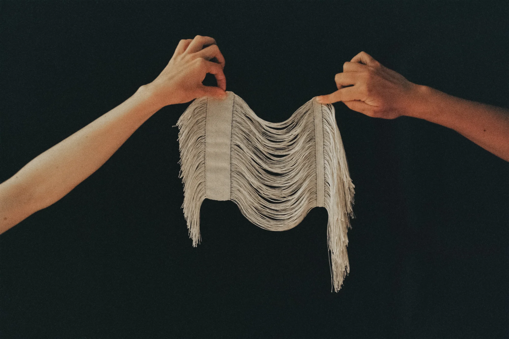
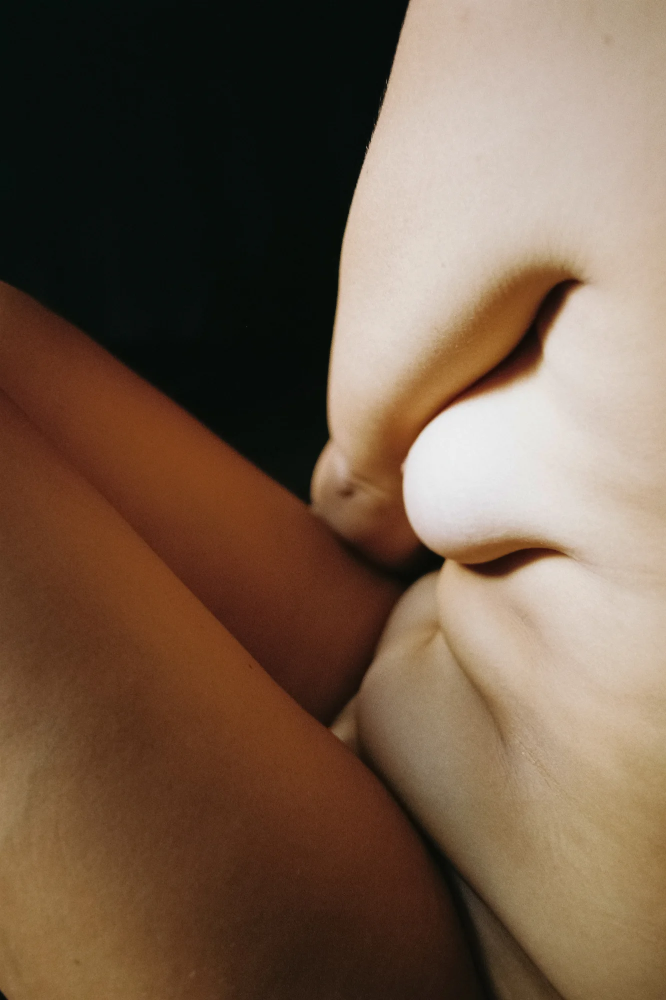
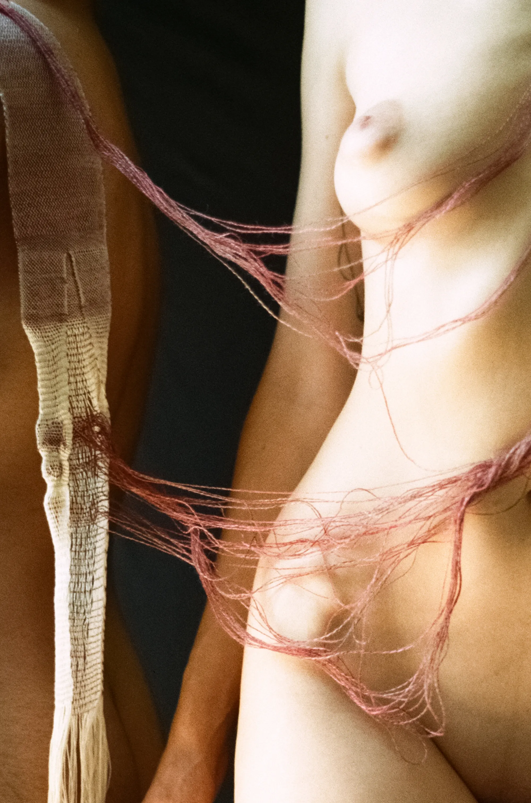
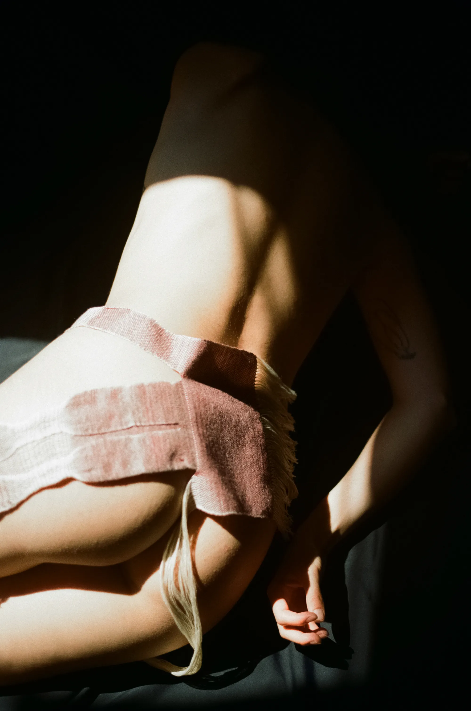
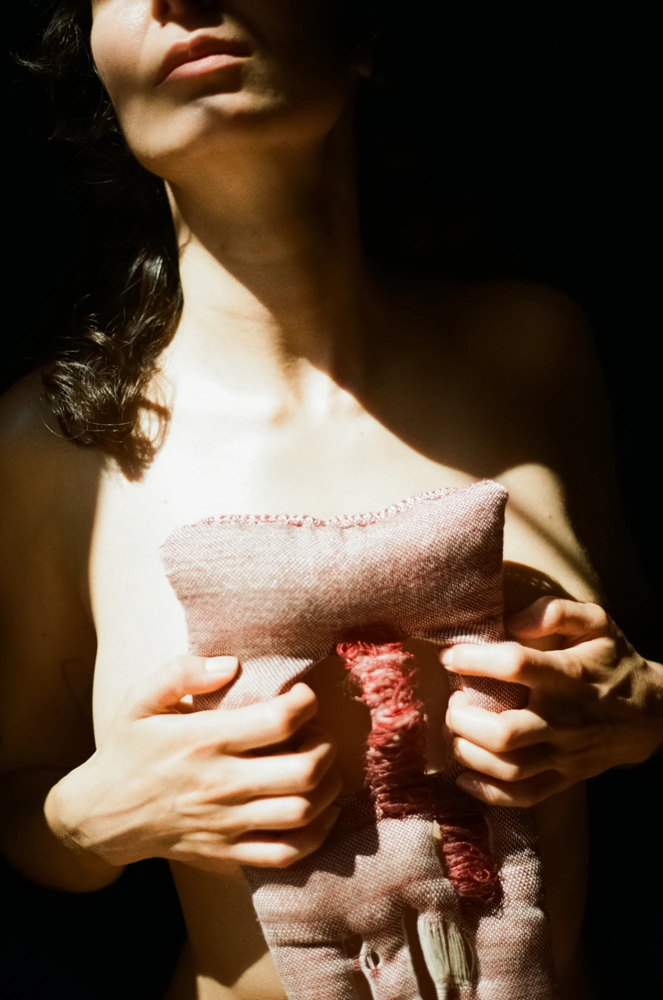
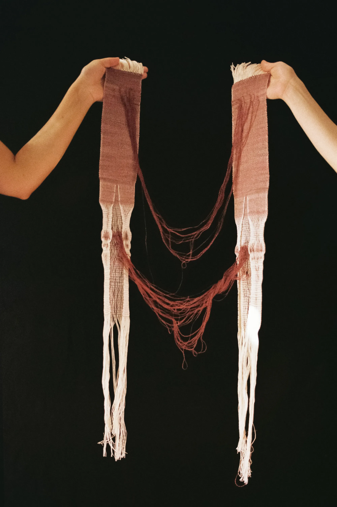
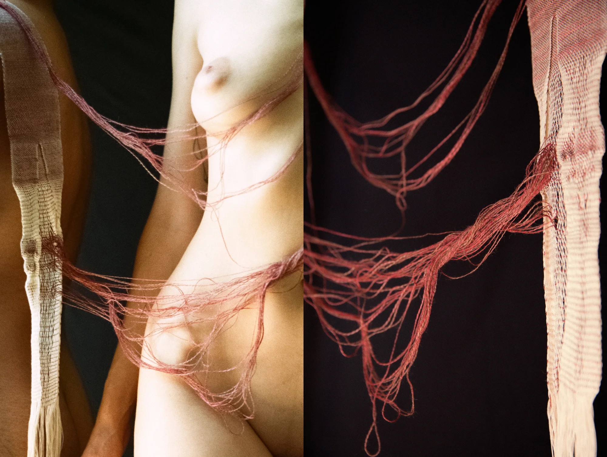